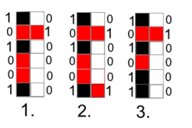

Задача: Найти количество способов замостить таблицу n×m доминошками 1×2 и 2×1.
Таблица (2x2):
==|| ||Таблица (2x3):
Вариант 1: 3 вертикальных домино
_ _ _
|_| |_| |_|
|_| |_| |_|Вариант 2: 2 горизонтальных домино
__ _
|__| | |
|__| |_|n × m не делится на 2), замостить таблицу невозможно, потому что каждая доминошка покрывает ровно 2 клетки.n, m <= 10), потому что количество способов быстро растёт.Cостояние одной вертикальной полосы (столбца) поля, закодированное в виде битовой маски длины n.

d: d[i][j] = 1, если можно перейти из профиля j в i.j там, где 1, в i должно быть 0. (т.е можно положить горизонтальную доминошку, чтобы ее начало лежало в столбце i)i — чётные подстроки (можно положить вертикальные домино).Сначала проверяем условие 1, а затем условие 2. Если оба выполняются для i, j - ставим в матрицу 1
Пояснения:
00 = обе клетки свободны, 01 = верхняя занята, 10 = нижняя занята, 11 = обе заняты.
Таблица d[j][i]: 1 — переход возможен, 0 — нет
| j \ i | 00 | 01 | 10 | 11 |
|---|---|---|---|---|
| 00 | 1 | 0 | 0 | 1 |
| 01 | 0 | 0 | 1 | 0 |
| 10 | 0 | 1 | 0 | 0 |
| 11 | 1 | 0 | 0 | 1 |
Пример: d[00][11] = 1 означает, что из профиля 00 (обе клетки свободны) можно перейти в 11 (обе клетки заняты горизонтальными домино).
a[k][i] — число способов дойти до k-го столбца с профилем i.a[0][0] = 1.a[k][i] = sum(a[k-1][j] * d[i][j])
def tiling_dominoes(n, m):
if (n * m % 2 != 0):
return "Your table cannot be paved with 2 x 1 and 1 x 2 dominoes."
profiles = 1 << n # 2^n профилей
d = [[0] * profiles for i in range(profiles)]
# Построение матрицы переходов
# Мы делаем матрицу d такую, которая показывает нам из какого профиля можно перейти в какой
# Например: если d[0] = [1,0,0,1], то это значит, что из 0 столбца,
# то есть из 00 можно перейти в 00 и в 11 и больше никуда
for j in range(profiles):
for i in range(profiles):
# проверяет не пересекаются ли 1 в нашем и следующем столбце
# например: 01(1) и 11(3) = 01(1), и если где то будет не 00,
# то значит оно нам не подходит
if (j & i) != 0:
continue
combined = j | i # делает n битов, которые содержат объединение битов нашего столбца и следующего.
# Например: если нынешний = 00(0) а следующий = 11(3), то их объединение = 11,
# оно нам нужно для проверки количества нулей между 1, то есть если есть например 1010 и 0000,
# то получится 1010 и нам никак не всунуть туда доминошки вертикальные.
# вы зададитесь вопросом: почему если в 1 единичка,
# то в следующем не надо проверять количество нулей во 2,
# так как если 1 то в следующем столбце должно быть ноль
# и они могут быть замощены, например, горизонтальными
count = 0
valid = True
for bit in range(n): # проходимся по нашему combined = 11 (как в примере)
# и считаем с первого бита, то есть с 1 или если наш combined = 10, то с 0 и потом 1
# и если это = 1, то проверяем на количество 0 до этой единицы
# и делаем его False если значит не равно нулю и заканчиваем этот цикл,
# а если кратно 2, то значит count = 0
if (combined >> bit) & 1:
if count % 2 != 0:
valid = False
break
count = 0
else:
count += 1
if valid and (count % 2 == 0):
d[j][i] = 1
a = [[0] * profiles for i in range(m + 1)]
a[0][0] = 1 # так как первым столбец может быть только 0, в нашем случае 00
# Заполнение динамики
for k in range(1, m + 1): # проходимся по всем столбцам до m+1
# так как мы еще создаем столбец после последнего,
# чтобы сосчитать количество способов прийти в 00 в конце
for i in range(profiles): # проходимся по всем профилям
# считаем для каждого профиля количество возможных способов туда перейти на такой то столбец
a[k][i] = sum(a[k-1][j] * d[i][j] for j in range(profiles))
# то есть мы для каждого столбца ищем количество способов добраться до предыдущего столбца
# и умножаем на d = 0, если переход невозможен и 1, если переход реален
# и после мы прибавляем все к a[k][i]
return a[m][0]
print(tiling_dominoes(int(input()), int(input())))
n (до 5-6)Спасибо за внимание!